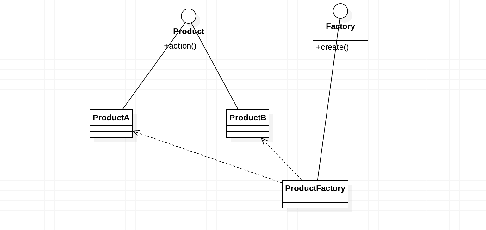
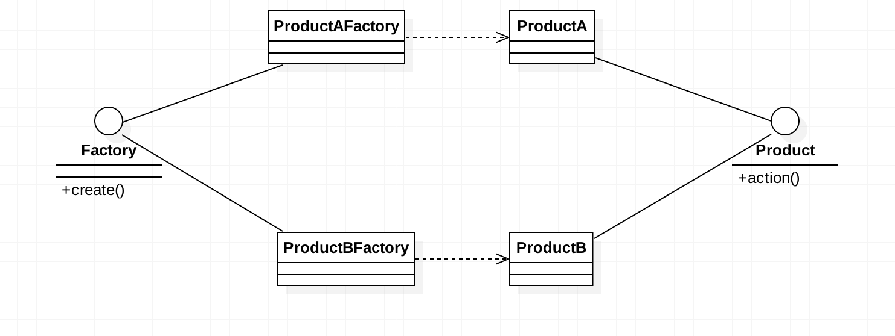
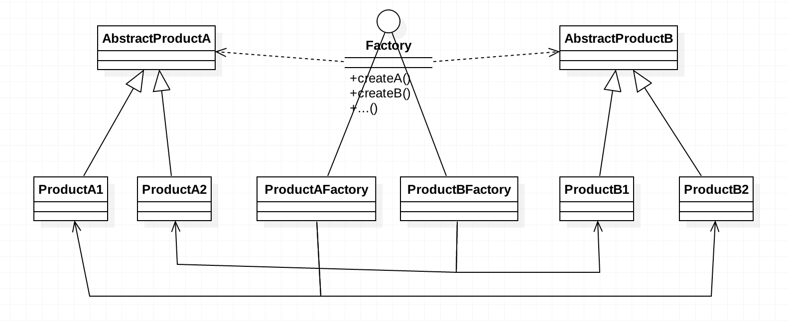

知识总结之 工厂模式
设计模式类的书及资料，看过很多遍，学习和理解容易，灵活应用就难了。只用多总结，多看别人代码，多多积累编码经验，才可以循序渐进，慢慢学会如何实战应用。

设计模式-工厂模式
定义
简单工厂模式（静态工厂）：定义一个创建对象的接口，在公共的接口方法中，通过不同的参数来创建目标对象。（里氏替换）
工厂方法模式：定义一个用于创建对象的接口，目标对象实现该接口，并在方法中实现如何创建对象。（开闭原则）
抽象工厂模式：定义用于创建一组相关或者相互依赖的对象接口，而不需要指定具体类。（依赖倒置）
实例
简单工厂

工厂方法

抽象工厂

 }}/weixin.jpg)
 }}/zhifubao.jpg)